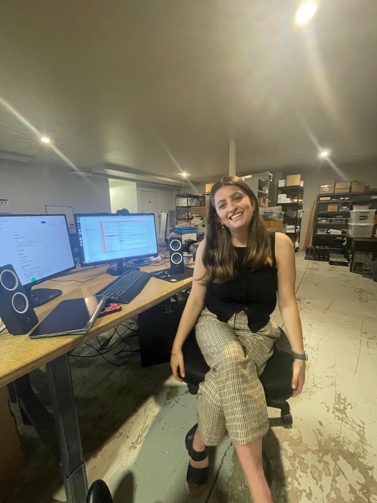

Software Engineering Student
I build full-stack applications, work with APIs and databases, and enjoy turning messy problems into useful software.

I'm a third-year Software Engineering student at the University of Canterbury. I'm interested in full-stack development, APIs, databases, data processing, and building software that is practical and easy to use.
A full-stack productivity app with task lists, calendar views, board views, drag-and-drop sorting, and profile features.
React · TypeScript · .NET · SQLA data project using Goodreads ratings to explore collaborative filtering and book recommendations.
Python · Dask · pandas · DataprocA web development project focused on REST endpoints, routing, MySQL queries, and frontend API integration.
Express · TypeScript · MySQL · ReactA team product design and backlog project focused on task sharing, invitations, gamification, and user stories.
Agile · Scrum · Product DesignI'm always happy to connect about software, projects, or graduate opportunities.